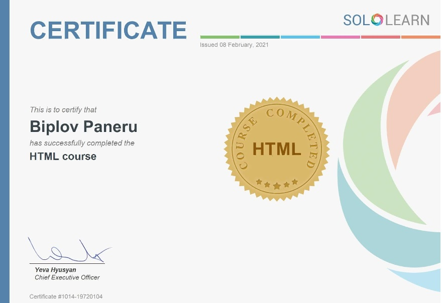
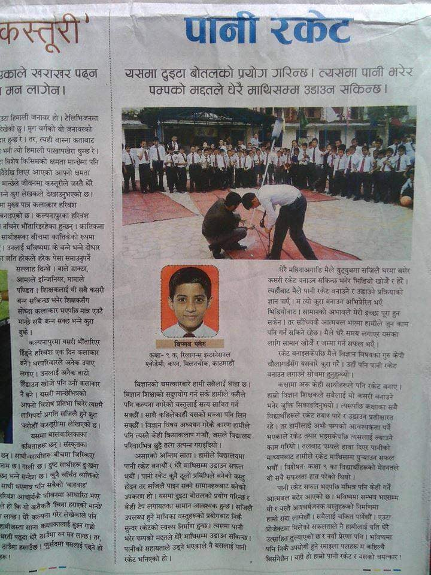

- SOLOLEARN C#
I am learning such languages since primary level school days when technology had just revolved throughout the world as facebook was just under introductionary phase and adsl internet were available
First achievement in sololearn with c#
React and redux
web development practise begins from react
Redux is a predictable state container for JavaScript apps.
It helps you write applications that behave consistently, run in different environments
(client, server, and native), and are easy to test. On top of that, it provides a great developer experience,
such as live code editing combined with a time traveling debugger.
HTML is a markup language for dynamic web programs
Html course completion in sololearn
Html can build dynamic web pages with variety of inbuilt functions available
I developed a water rocket on pascals pressure law and i wrote an article on its principle how it was made and operated that was published in national nagarik daily.
I was deeply interested in robotics and astrophysics and related projects since childhood
Find me on instagram:
I am available on instagram

mail me @biplov001@gmail.com for any queries
Programming is actually a fun
One day world would be filled with technologies robotics and machines and a software engineer and programmer will be a heart of technological world. “If you think about a camera, it really is the richest sensor available to us today at a very interesting price point,” he says. “Because of smartphones, camera and image sensors have become incredibly inexpensive, yet we capture a lot of information. From an image, we might be able to infer 25 signals today, but six months from now we’ll be able to infer 100 or 150 signals from that same image. The only difference is the software that’s looking at the image. And that’s why this is so compelling, because we can offer a very important core feature set today, but then over time all our systems are learning from each other. Every customer is able to benefit from every other customer that we bring on board because our systems start to see and learn more processes and detect more things that are important and relevant.”